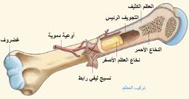
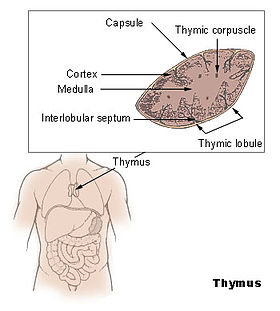
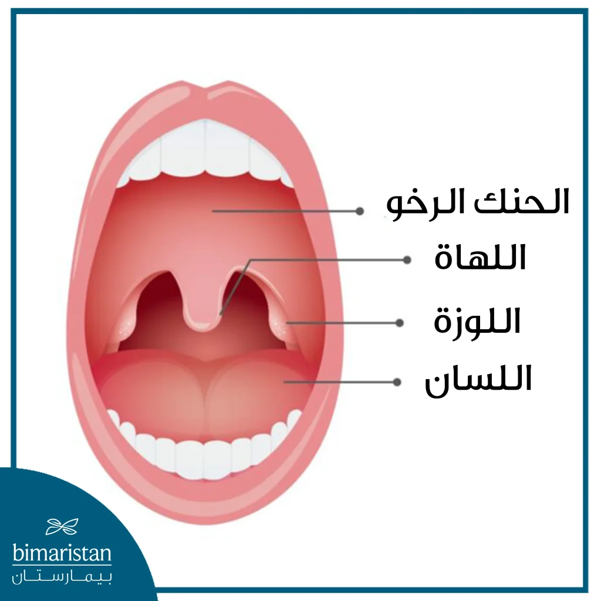
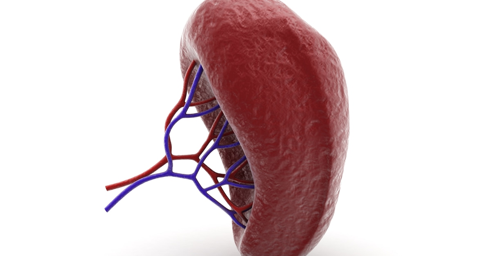
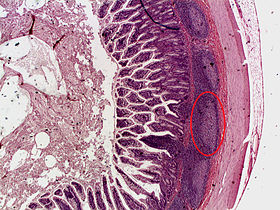
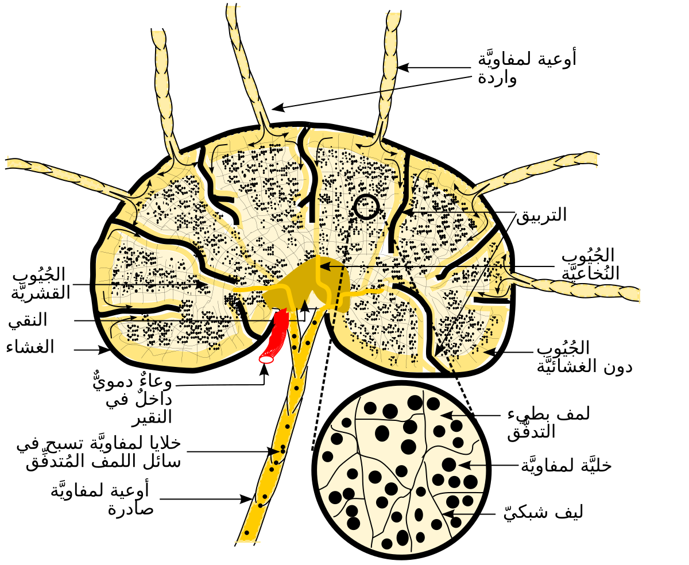
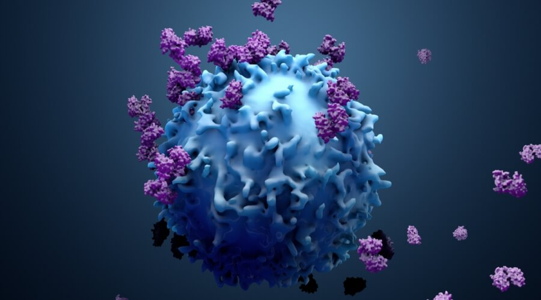

الجهاز المناعي وأعضاؤه
الجهاز المناعي: هو جهاز متناثر الأجزاء في أنحاء الجسم، أي أن أجزاؤه متفرقة ولا ترتبط مع بعضها بصورة تشريحية متتالية كما في الأجهزة الأخرى (الهضمي، الدوري، التنفسي).
ومع ذلك، فإن أجزاءه تتفاعل وتتعاون مع بعضها بصورة متناسقة، مما يجعله من الناحية الوظيفية وحدة واحدة.

الأعضاء الليمفاوية (Lymphoid organs)
تتم في الأعضاء الليمفاوية عملية نضج وتمايز الخلايا الليمفاوية، وتحتوي على أعداد غفيرة منها.
ومن أهم هذه الأعضاء:
1. نخاع العظام الأحمر (Red Bone Marrow):
1. نخاع العظام الأحمر (Red Bone Marrow):
- هناك نوع آخر يُعرف بـ نخاع العظام الأصفر (Yellow Bone Marrow) يوجد في التجويف المركزي للعظام الطويلة ويتميز بغناه بالخلايا الدهنية ولا يشارك في تكوين خلايا الدم.
- مكان وجوده:
يوجد داخل العظام المسطحة مثل الترقوة، القص، الجمجمة، العمود الفقري، الضلوع، الكتف، الحوض، وكذلك رؤوس العظام الطويلة.
- وظيفته:
إنتاج خلايا الدم الحمراء والبيضاء وصفائح الدم.

"لمشاهدة فيديو توضيحي اضغط هنا"
2. الغدة التيموسية (Thymus Gland):
- وظيفتها:
إفراز هرمون التيموسين (Thymosin) الذي يحفز نضج الخلايا التائية (T-cells) وتمايزها.
- يتغير حجمها مع تقدم العمر حيث تكون كبيرة في الطفولة وتنكمش تدريجيًا بعد البلوغ.
- مكان وجودها:
تقع على القصبة الهوائية أعلى القلب وخلف عظمة القص.

"لمشاهدة فيديو توضيحي اضغط هنا"
3. اللوزتان:
- وظيفتهما:
منع دخول الميكروبات والأجسام الغريبة مع الطعام أو الهواء، مما يساعد في حماية الجسم.
- مكان وجودهما:
على جانبي الجزء الخلفي من الفم.

4. الطحال:
- مكان وجوده:
يقع في الجانب العلوي الأيسر من تجويف البطن.
-وظيفته:
يلعب دورًا هامًا في المناعة نظرًا لاحتوائه على:
- الخلايا البلعمية الكبيرة (تلتهم الميكروبات والخلايا الهرمة).
- الخلايا الليمفاوية التي تشارك في الدفاع المناعي.

5. بقع باير (Peyer’s Patches):
- مكان وجودها:
تنتشر في الغشاء المخاطي المبطن للجزء السفلي من الأمعاء الدقيقة.
- وظيفتها:
تلعب دورًا في الاستجابة المناعية ضد الكائنات الدقيقة في الأمعاء.

6. العقد الليمفاوية (Lymphatic Nodes):
- مكان وجودها:
تتوزع في أماكن مختلفة مثل الإبطين، أعلى الفخذ، جانبي العنق، وبالقرب من الأعضاء الداخلية.
- وظيفتها:
ترشيح الليمف وتنقيته من المواد الضارة، بالإضافة إلى تخزين خلايا الدم البيضاء لمكافحة العدوى.
- حجمها:
يتراوح بين رأس الدبوس وبذرة الفول الصغيرة.

الخلايا الليمفاوية (Lymphocytes):
هي نوع من خلايا الدم البيضاء غير المحببة، تشكل حوالي 20-30٪ من خلايا الدم البيضاء. يتم إنتاجها في نخاع العظام الأحمر، ثم تنضج في أماكن مختلفة:
- الخلايا البانية (B-cells):
- مكان نضجها: نخاع العظام الأحمر.
- وظيفتها: إنتاج الأجسام المضادة لمحاربة الأجسام الغريبة. 